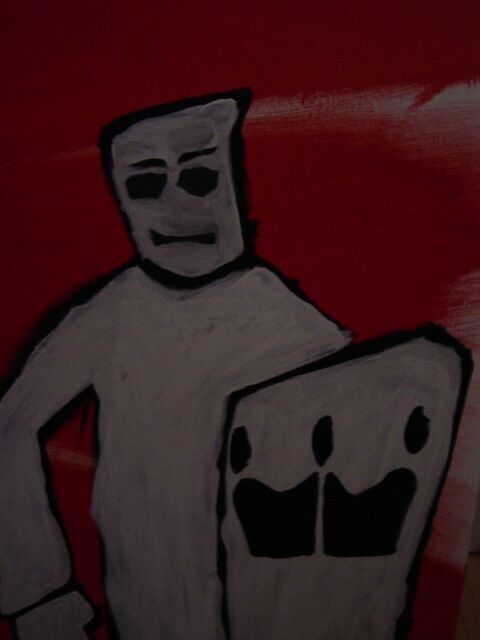

The Revoluti0n
| last article | table of contents | next article |
|---|
| last article | table of contents | next article |
|---|
I like it here by El DudErin0
Ich öffne die Augen und sehe an die Decke. Das heisst, ich würde an die Decke sehen, wenn es nicht dunkel wäre. Also ersteinmal die Hand ausfahren - aber schön vorsichtig, damit ich nichts umschmeisse - und nach der Lampe tasten. Nach einigen unbeholfenen Bewegungen habe ich etwas in der Hand, was sich vertraut nach dem Schalter meiner Lampe anfühlt. *klick* *klick* ... *klicklicklick* ARGH! Wieso kommt hier kein verdammtes Licht? Muss wohl die Glühbirne kaputt gegangen sein, vielleicht habe ich mir letztes Wochenende einen Vaporizer für mein neues Gras aus Holland gebaut. Verdammt, wenn ich mich doch nur daran erinnern könnte! Also erstmal nach meiner Brille fischen, und dann hoffen, dass ich nicht auf allzu verletzende Gegenstände trete, ich muss immerhin noch zur Schule gehen. Als ich mich an der Wand entlang zum Lichtschalter manövriert habe, freue ich mich auf die Ankunft des Lichtes in meinem Zimmer, und das Brennen in den Augen, wenn man fast blind wird vom ersten Licht, das einem an die Augen dringt. Aber nichteinmal diese Freude ist mir gegönnt. Der geneigte Leser hat zu diesem Zeitpunkt wohl schon gemerkt, dass im Haus der Strom ausgefallen war. Im Gegensatz zu mir ist der geneigte Leser auch nicht verschlafen-missmütig und sehnt sich nach seinem weichen Bett zurück. Das will heissen, mir war das Ganze nicht so klar, wie es mir sein hätte sollen. Also reisse ich ersteinmal die Türe zu meinem Zimmer auf und gehe halb, falle halb die Treppe zur Küche herunter. Ich versuche mich an einem aufrechten Gang á la James Bond damit meine Elern nicht wieder denken, ich hätte wieder die gnaze Nacht durchgekifft, wie dieses eine Mal als ich mir Zitronen über die Zehen stülpte und meine Mutter mit einem "Raumschiff Enterprise" Replika Phaser im Gesicht aufweckte (Der kleine Plastikschalter war auf terminieren und nicht betäuben geschaltet...). Als ich die Türe zur Küche öffne denke ich, "OK, jetz aber schnell wieder aufwachen, denn in Wirklichkeit vermieten wir unsere Küche schon seit drei Monaten nicht mehr an diese Sekte." Vor mir auf dem Küchentisch stehen riesige Kerzen, deren Schein meine Sicht blendet und um den Tisch herum sitzen einige Schatten und spielen anscheinend Schafkopf. Als sich meine Augen wieder fokussieren stellt sich das ganze als Täuschung heraus und am Tisch sitzen bei Kerzenschein meine Eltern und meine Schwester und nihillieren in meine Richtung: "Stromausfall". Langsam setzt sich für mich auch das Puzzle zusammen. Stromausfall also... Das heisst, mein PC war ausgeschaltet und ich hab es nichteinmal gemerkt. Ohne etwas auf ihren Zuruf zu antworten entferne ich mich fluchtartig von meiner Familie und sehe nach, ob meinem PC etwas zugestossen ist. Ich schalte ihn also an, und als der Titelsong der Benny Hill Show erklingt, jubele ich kurz innerlich auf, da mein PC normal startet ohne im BIOS hängenzubleiben. Nicht, dass ich jetzt gerade paranoid wäre, aber nach siebenundvierzig ähnlichen Vorfällen, bei denen es nicht so toll lief ist so ein Startsound schon eine kleine Beruhigung. Jedenfalls lade ich den ganzen Scheiss, den man so braucht, und sehe dass meine Scatmovies in Kazaa mit einer Downloadrate von 70kb gesaugt werden. JUBEL JUBEL FREU FREU, wenn ich aus der Schule zurückkomme gibt's erstmal ne Ladung "Deutsches Schiezze Filme" für mich! Was ich nicht erwähnt habe bisher - und was auch von keinerlei Signifikanz war - ist, dass ich auch in meiner Freizeit Möchtegernschwarzer bin. Das bedeutet auch, dass ich so tue als würde ich verstehen, was die Rapper der Welt zu sagen haben. Manchmal mag ich es auch vorzutäuschen freestylen zu können, also suche ich mal schnell nach nem Instrumental für Shook Ones von Mobb Deep und geh erstmal ins Badezimmer, um mir die Asche und Lätt'n von gestern ausm Gesicht zu wischen. als ich so dasteh und mir immer wieder Wasser ins Gesicht schmeisse, um wach zu werden meint das Licht, es müsste zeigen wie funky fresh es down ist mit meinem kommenden Freestyle und macht erstmal nen improvisierten epileptischen Anfall, soll heissen, es geht an - aus - bleibt aus - an -aus - wieder an. Mit ner neuen Ladung Wasser lass ich erstmal das Fragezeichen aus meinem Gesicht verschwinden und geh zurück zum PC. Dieser ist zu meiner Überraschung nicht mehr, wie erwartet AN, sondern AUS. Als ich das Ding anschalte und hochfahren lasse ist es ersteinmal Zeit einen achtundvierzigsten Strich in die Wand neben meinem PC-Tower zu ritzen. Ein schöner Bluescreen schreit meinen immernoch lichtempfindlichen Augen entgegen. UNMOUNTABLE BOOT VOLUME. HASS! VERACHTUNG! "FUCK!" "KLEINE KINDER, DIE VON BOZO, DEM WUNDERSAMEN CLOWN EINE LEKTION IM ARSCHFICKEN ERTEILT BEKOMMEN! VERFLUCHTE GOTTVERDAMMTE DRECKSCHEISSE! Nachdem ich mir fast die Hand an meiner Tastatur gebrochen habe, und sie näher inspizire, um mögliche offene Brüche frühzeitig zu diagnostizieren fällt mein Blick auf meine Armbanduhr und die sagt: ES IST ZEIT FÜR SCHULE! WOW. Dieser Schultag ging als einer der längsten, langweiligsten in die Geschichte der amerikanischen Eisenbahn und auch die Geschichte der Welt ein. Nachdem ich heimkam, aus volkommener Langeweile ein Bild gemalt hatte während sechs Stunden lang CHKDSK auf meinem PC lief (Anmerkung: das Bild heißt when i am king (you will be first against the wall) und kann weiter unten begutachtet werden), sitze ich nun hier, bin überglücklich, benötige ungefähr ... viel Geld für irgend ne Backup Scheisse, und bekomme ne Mail in der steht "SCHREIB WAS, FAULE DRECKSAU!" und was denkt ihr tue ich? Ich mach notepad auf, und schreib davon, was mir heute passiert ist, als ich aufwache. Ich öffne die Augen und sehe an die Decke. ad absurdum.
